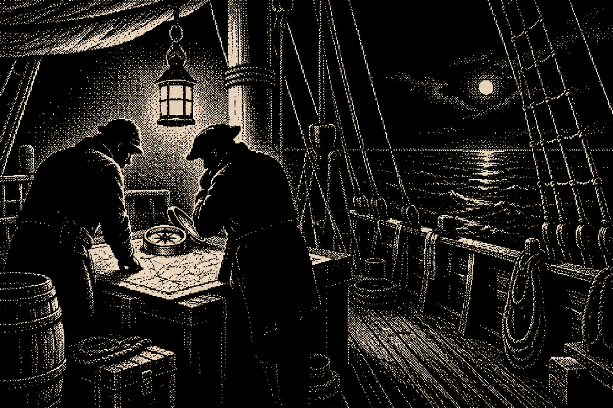

01 · ROSTER
INVESTIGATION RECORD · SPECIMENS
The Lantern Ledger
Forensic fragments only; no full-screen composition.

02 · EVIDENCE
Evidence entry
[O]
Observed
Lantern found at stairwell
NIGHT WATCH · RECORD 0103 · CHAPTER
Deck marker
Night watch / lower deck
Unlocked · incomplete
Focus only. No evidence changed.